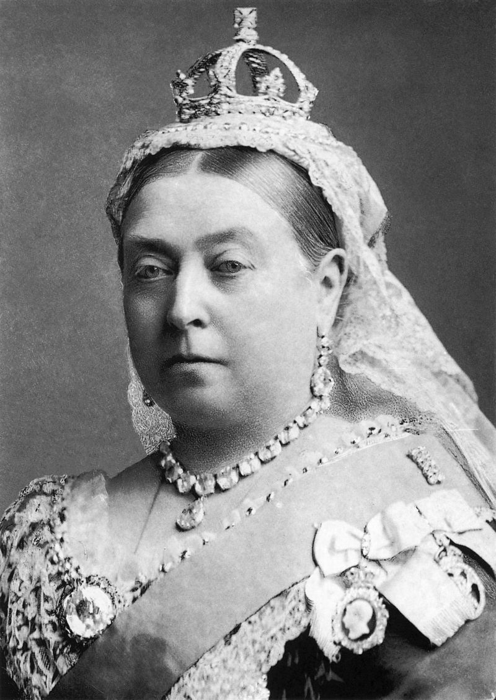

Вікторія (ім'я)
Історія
Вікторія в римській міфології — богиня перемоги. Зображається з крилами, іноді на колісниці, з лавровим вінком у руці, яким вона вінчала переможців. Богиня перемоги присутня й у грецькій міфології у вигляді богині Ніки, яка повністю відповідає римській Вікторії. В Україні дане ім'я з'явилось у XVIII столітті. Є дуже поширеним, зустрічається частіше в містах, ніж у селах. У списку найпопулярніших імен Вікторія входить до другої десятки.
Іншомовні аналоги
біл. Вікторыя А — англ. Victoria; — грец. Βικτоρια; Д — дан. Viktoria; І — ісп. Victoria; італ. Vittoria; К — кит. 維多利亞; Н — нід. Victoria; нім. Viktoria; норв. Victoria; П — пол. Wiktoria; Р — рос. Виктория; У — укр. Вікторія;Ф — фр. Victoire;фін. ViktoriaЧ — чеськ. Viktoria; Ш — швед. Viktoria;Я — яп. ヴィクトリヤ
Використання імен
Вікторія, Вікторійка, Вікторинка, Вікуся — такі форми має ім'я Вікторія. Популярною формою цього імені є також «Віка».
Див. також
- Список українських жіночих імен
- Список українських чоловічих імен
Примітки
Скрипник Л. Г., Дзятківська Н. П. Власні імена людей. Словник-довідник — за ред. В. М. Русанівського; НАН України, Ін-т мовознав. ім. О. О. Потебні. — 3-тє вид., випр. — К. : Наукова думка, 2005. — 334 с., ілюстр. — Бібліогр.: C. 110. — ISBN 966-00-0550-4.